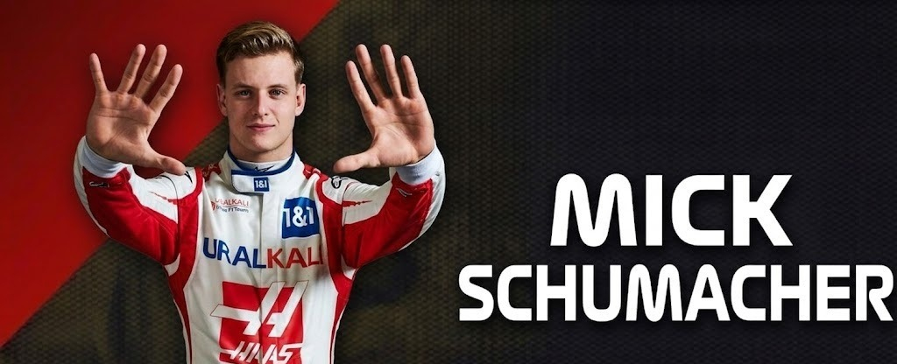
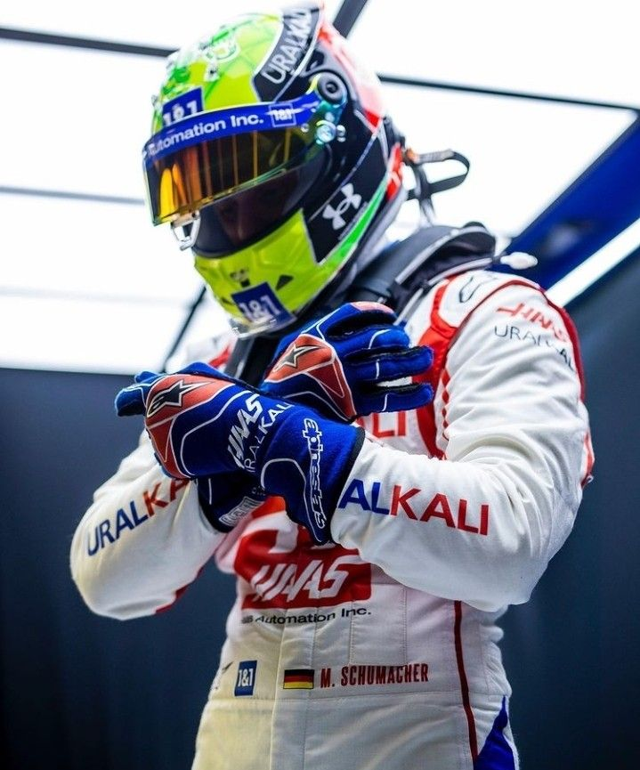
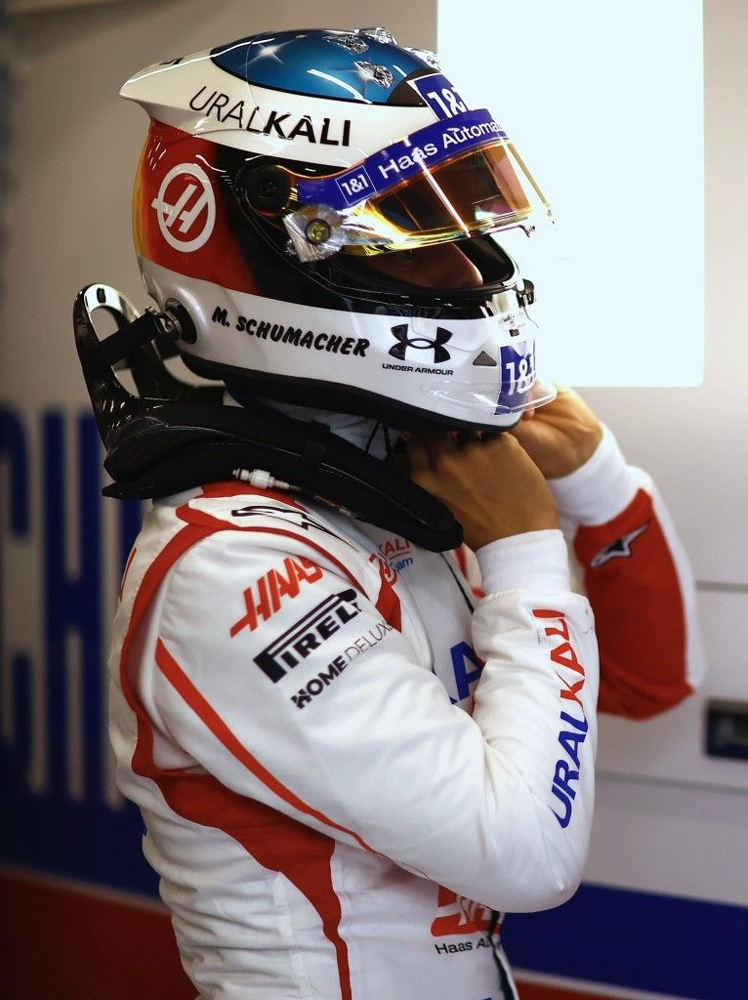

Mick Schumacher
DRIVER PRESENTATION

Mick Schumacher
Evolución Metódica y Legado Competitivo de Mick Schumacher en su Ingreso a la Fórmula 1
Mick Schumacher inició su formación bajo un escrutinio mediático sin precedentes, respondiendo con un enfoque metódico y una ética de trabajo excepcional que lo llevó a ser campeón de la Fórmula 3 Europea y la Fórmula 2. Su debut en 2021 con el equipo Haas representó un año de aprendizaje estructural en una temporada enfocada enteramente en el desarrollo futuro. Schumacher demostró una capacidad notable para gestionar la degradación de neumáticos y mantener ritmos consistentes en condiciones de carrera difíciles, superando regularmente a su compañero de equipo y mostrando una madurez táctica impropia de un novato. Su integración técnica con el equipo y su crecimiento constante a lo largo de las 22 carreras del calendario cimentaron las bases de su trayectoria profesional, honrando un legado histórico con resultados basados en el esfuerzo y la precisión técnica.
MOMENTOS DESTACADOS

Campeón de la Fórmula 2
2020: Mick se corona campeón de la F2, validando su ascenso a la máxima categoría con talento propio.

Debut en Bahréin
2021: El regreso del apellido Schumacher a la parrilla de F1, un momento histórico para el deporte.

Brillo en Turquía
2021: Schumacher logra llevar el limitado Haas a la Q2, demostrando su velocidad bajo presión.